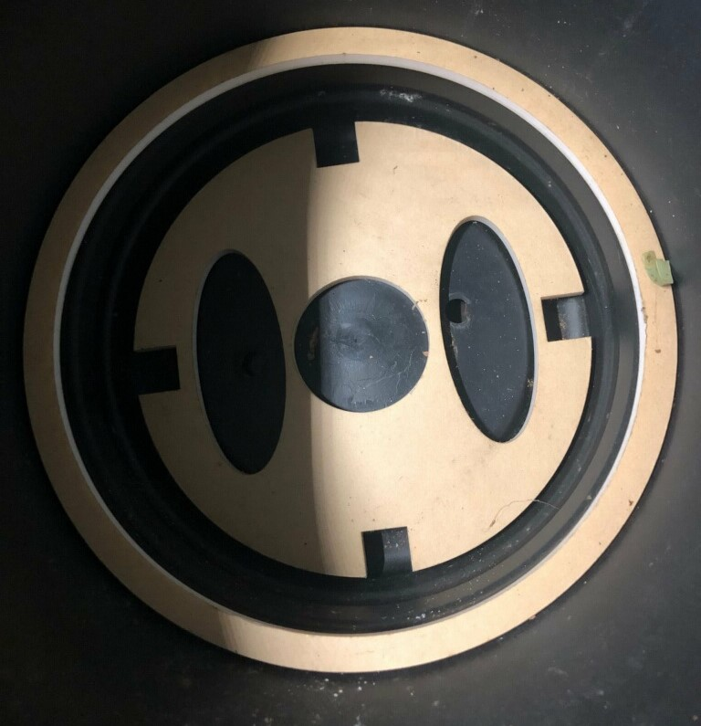
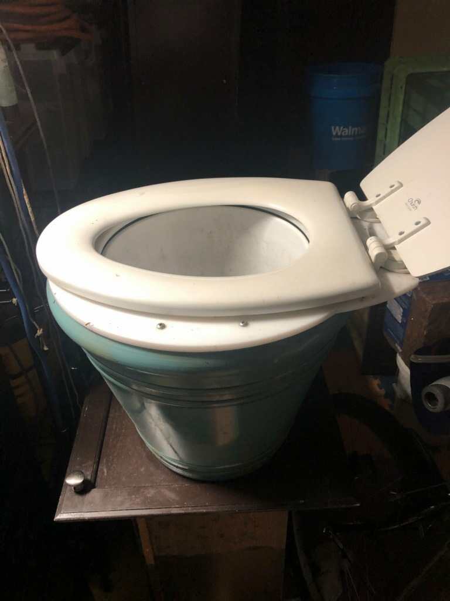
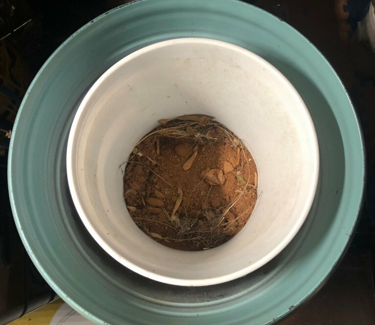
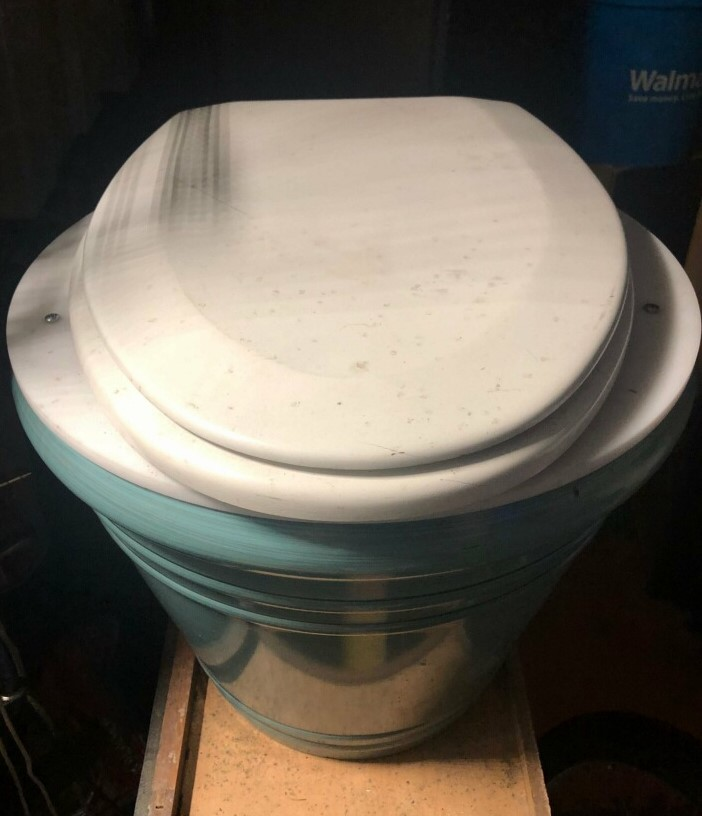

Do It
How to construct your own Pot-T!
Required Items
Tools
- Lasercutter or Skillsaw
- Socket Wrench
Materials
- A large flower pot, approximately 16 inches in height (Recommended)
- A 5 gallon bucket(Cheap Option)
- Centering Spacer
- Centering Ring
- Base for the toilet seat
- Standard Oval Toilet Seat
Supplies
Recommended supplies for prolonged use
- Coco Choir
- A Scoop (A spade should work fine)
- A container for the above supplies (An ice bucket like this works great)
- Create a base for the bucket to sit securely on inside of the pot. As seen below, this consists of two parts:
a centering spacer in the middle that goes under the bucket, and a ring that goes around the outside to go around the bottom of the bucket

- Create a top for the pot/base for the seat that fits over the entire top, with a center hole to match the top edge of the bucket. The picture below
should give a good idea of the proper shape of the base for the toilet lit.

- Place the bucket centered inside the pot, and line the bottom with coco Choir to help manage waste.

- Bolt the top you created to your pot, then attach your toilet seat of choice.

- Congradulations! You can now go in style with your own Pot-T! After each use cover waste with coco coir to help absorb waste and mask smells.